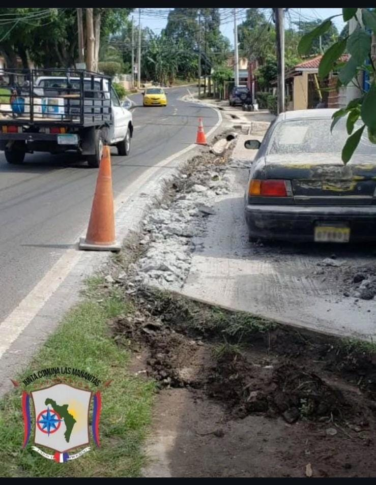
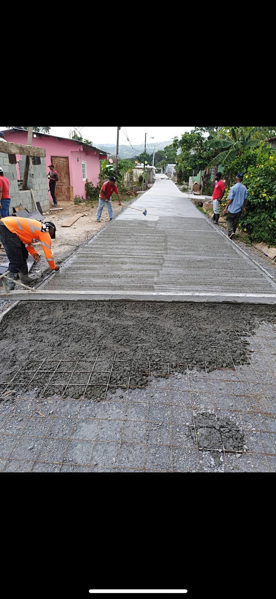
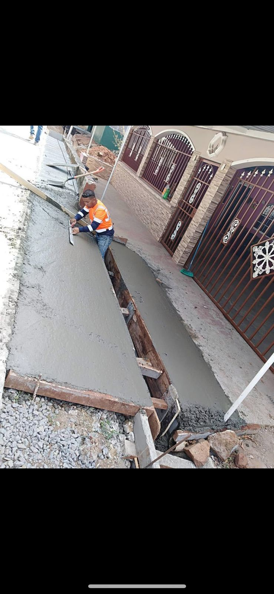
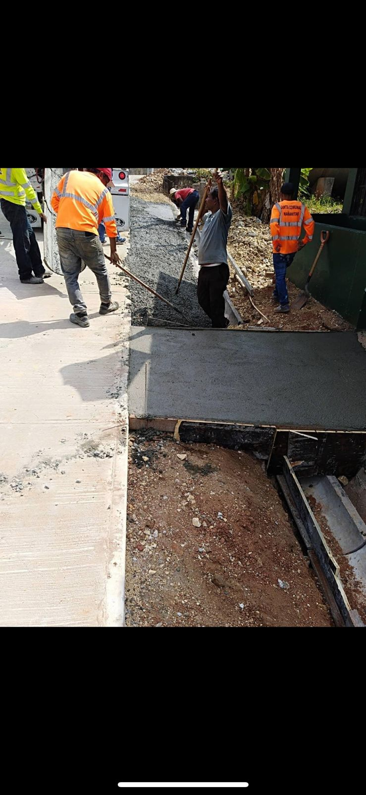
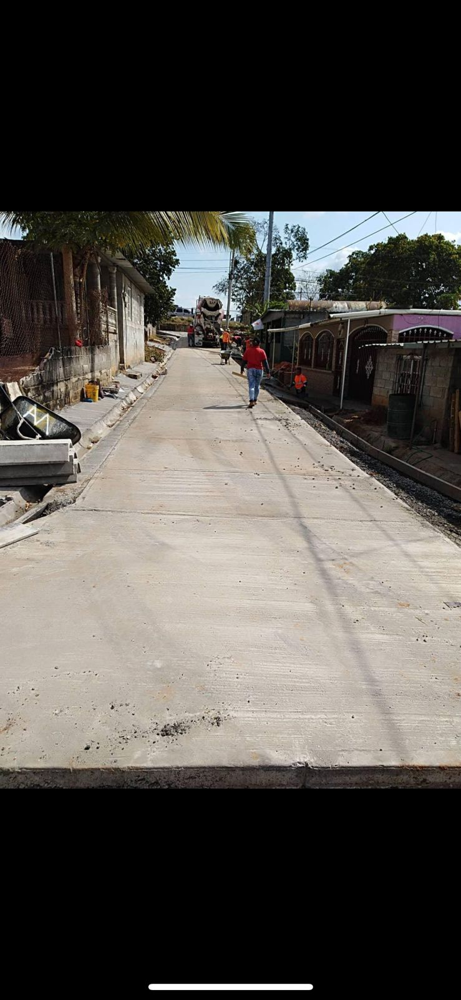
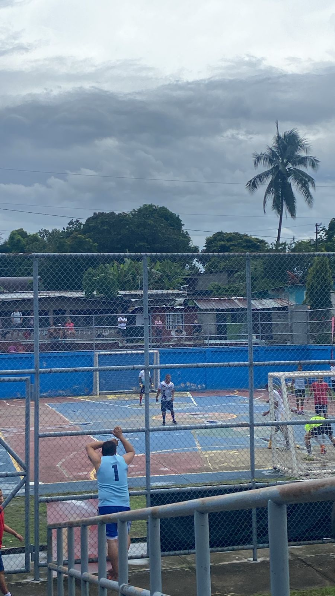
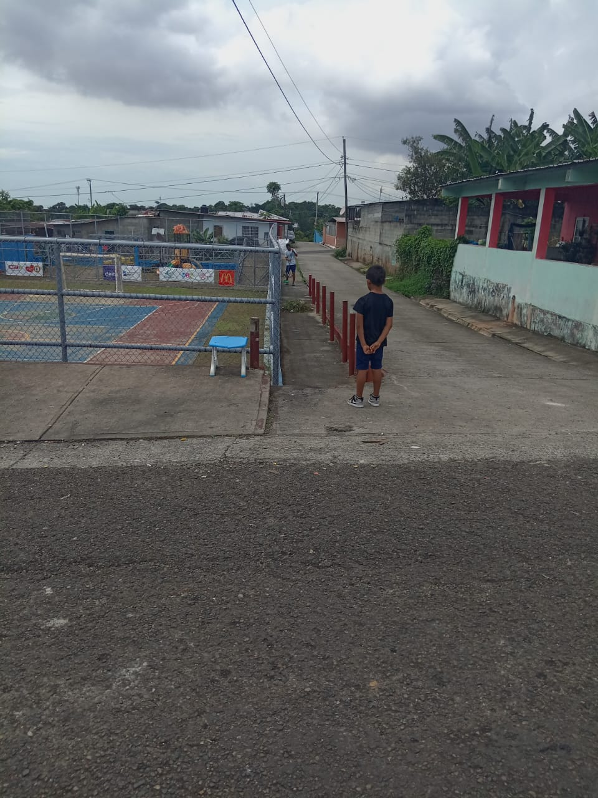

Vista General del Sector 4

Arreglo de calle del Sector 4 el dia q fuimos justo tuvimos la suerte de poder ver como estaban arreglando la calle del sector

Arquitectura Colonial del sector donde pudimos ver que aun siendo un lugar alejado de la cuidad lo que son las casas y su infraestructura esta bien cuidada y con constantes arreglos

Vista General del Sector 4

Vista General del Sector 4

Cancha del Sector 4 se ve mejor la infraestructura de las casas

Vista General del Sector 4 donde se puede ver de mejor manera la cancha
equipo del Sector 4 tuvimos la suerte q ese dia iban a tener un partido